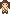
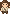

손목 풀기

4프레임 · 250ms기지개
 4프레임 · 250ms
4프레임 · 250ms흥얼거리기
 4프레임 · 250ms
4프레임 · 250ms손 흔들기

4프레임 · 250ms양 걷기 · left
4프레임 · 250ms양 풀 먹기 · left
 4프레임 · 250ms
4프레임 · 250ms양 걷기 · right
 4프레임 · 250ms
4프레임 · 250ms게임에 연결한 5가지 몸짓과 양의 걸음·풀 먹기. 각 4프레임, 투명 PNG.

4프레임 · 250ms4프레임 · 250ms4프레임 · 250ms
4프레임 · 250ms4프레임 · 250ms4프레임 · 250ms